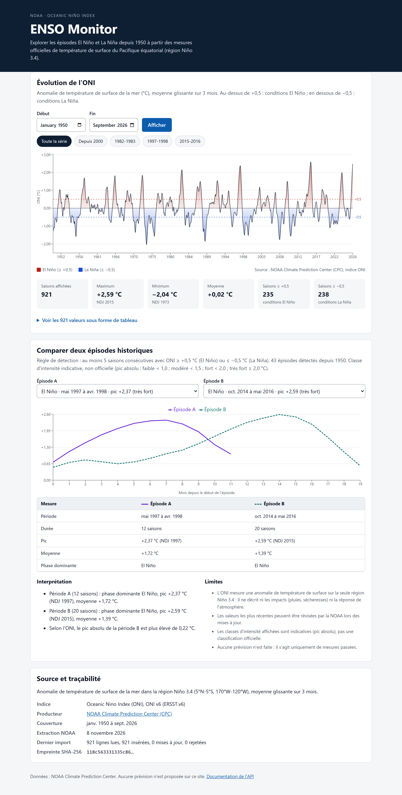
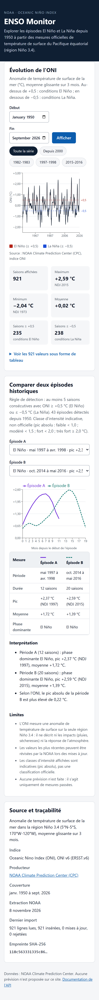
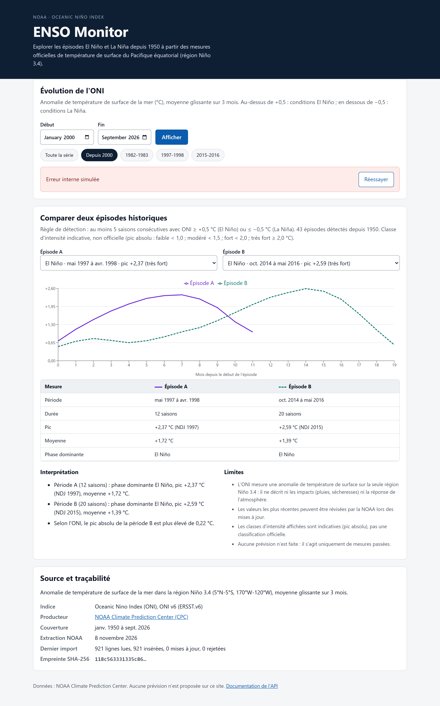

ENSO Monitor : ce qui a été réalisé, comment le présenter, comment le défendre
La soutenance est d'abord une code review individuelle : le jury évalue la compréhension, la justification des choix et la capacité à modifier le code en direct, plus que le nombre de fonctionnalités. Ce guide donne une vue d'ensemble du projet, un déroulé de présentation, la carte du code, les décisions à défendre, les questions probables et des exercices de modification à répéter avant le jour J.
enso-monitor/ · B : docs/Dossier_de_conception_ENSO_Monitor.pdf (14 pages)| Saisons importées (DJF 1950 à ASO 2026) | 921, 0 rejet |
| Épisodes détectés (règle NOAA) | 43 El Niño et La Niña confondus |
| Comparaison par défaut | El Niño 1997-1998 : 12 saisons, pic +2,37 °C (NDJ 1997) · El Niño 2014-2016 : 20 saisons, pic +2,59 °C (NDJ 2015) |
| Épisode en cours | El Niño depuis mai 2026, +2,46 °C en ASO 2026 (valeurs encore révisables) |
| Extremums de la série | max +2,59 (NDJ 2015) · min −2,04 (NDJ 1973) |
| Tests | 22 Pytest + 3 Vitest, tous verts ; lint Ruff, oxlint, TypeScript strict sans erreur |
| Taille de la réponse « série complète » | 74 Ko de JSON, 9 Ko après compression par Caddy |
| ENSO | El Niño-Southern Oscillation : variation naturelle couplée océan-atmosphère dans le Pacifique équatorial, avec deux phases opposées (El Niño chaud, La Niña froid) et une phase neutre. |
| Niño 3.4 | Zone du Pacifique équatorial (5°N-5°S, 170°W-120°W) où l'on mesure la température de surface de la mer pour suivre ENSO. |
| Anomalie | Écart entre la température observée et la moyenne climatologique de référence pour la même période de l'année. |
| ONI | Oceanic Niño Index : moyenne glissante sur 3 mois de l'anomalie en Niño 3.4. Valeur publiée au centième de degré. |
| Saison glissante | Trois mois consécutifs désignés par leurs initiales : DJF = décembre, janvier, février. Il y en a 12 par an, qui se chevauchent. |
| Épisode | Définition NOAA : au moins 5 saisons consécutives avec ONI ≥ +0,5 °C (El Niño) ou ≤ −0,5 °C (La Niña). |
| ERSST v6 | Jeu de données de température de surface reconstruit par la NOAA sur lequel l'ONI v6 est calculé. Un changement de version modifie légèrement les valeurs historiques. |
| RONI | Relative ONI : variante qui retire le réchauffement moyen de l'ensemble des tropiques. Non utilisé ici (le sujet demande l'un ou l'autre). |
| Exigence du sujet | État | Où le montrer |
|---|---|---|
| Importer une série NOAA authentique (ONI) dans PostgreSQL avec Python | Fait | backend/etl/, journal docker compose logs etl |
| Identifier la source et contrôler les doublons | Fait | data/raw/oni.metadata.json, table data_import, contrainte uq_observation_index_period |
| API FastAPI documentée, filtrage temporel, validation | Fait | http://localhost:8080/api/docs, routers/indices.py |
| Courbe interactive React/TypeScript, filtre de période | Fait | OniChart.tsx, PeriodFilter.tsx |
| Comparaison de deux épisodes, interprétation prudente | Fait | EpisodeCompare.tsx, services/episodes.py |
| Interface responsive, légende, clavier, états d'erreur | Fait | captures mobile et erreur ci-dessous, StatusMessage.tsx |
| PostgreSQL, SQLAlchemy, contraintes, migrations Alembic | Fait | models.py, alembic/versions/ |
| 3 tests minimaux (données, API, frontend) | Fait | test_transform.py, test_api.py, App.test.tsx |
| README, conventions Git, linting, secrets hors Git | Fait | README.md, git log, .gitignore, .env.example |
| Dossier de conception ≤ 15 pages, 8 sections imposées | Fait | 14 pages ; la déclaration des outils utilisés (section 8 et README) reste à compléter |
| Procédure de déploiement (VPS, Compose, Caddy, sauvegardes) | Fait | section 7 du dossier, compose.prod.yaml, deploy/ |
| Extensions (administration, carte, RONI, exports) | Non | choix assumé : le sujet dit qu'un MVP maîtrisé prime |

Vue desktop : courbe, indicateurs, comparaison, source.

Mobile (390 px).

Erreur API simulée : message et « Réessayer ».
| Temps | Partie | Contenu |
|---|---|---|
| 0 à 2 min | Contexte et besoin | Pitch de la section 1 ; public visé ; pourquoi l'ONI ; ce qui est volontairement hors périmètre. |
| 2 à 6 min | Démonstration | Script ci-dessous. Montrer les trois fonctionnalités, la source, un cas d'erreur. |
| 6 à 9 min | Conception | Diagramme de cas d'utilisation, modèle de domaine (pourquoi Episode n'est pas une table), séquence d'une consultation. |
| 9 à 12 min | Architecture et code | Schéma logique ; parcours d'une requête dans le code (filtre → client → route → requête SQL) ; ETL et idempotence. |
| 12 à 14 min | Qualité | Lancer les tests en direct ; sécurité (validation, secrets, réseau) ; une anomalie corrigée. |
| 14 à 15 min | Déploiement et bilan | VPS + Compose + Caddy + sauvegardes ; limites ; améliorations. |
docker compose up -d --build, page ouverte sur http://localhost:8080, terminal dans enso-monitor/, éditeur ouvert sur backend/app/routers/indices.py./api/docs, exécuter /observations avec start=2015-13 → 422 ; avec une bonne période → 200.docker compose run --rm etl → « insérées=0 mises à jour=0 » : relancer l'import ne crée pas de doublon.docker compose up -d --build # démarrer toute la pile docker compose ps # état et santé des services docker compose logs etl # résultat de l'import docker compose run --rm etl # rejouer l'import (idempotent) docker compose exec db psql -U enso -d enso -c "SELECT count(*) FROM observation;" docker compose exec db psql -U enso -d enso -c "SELECT * FROM data_import ORDER BY id DESC LIMIT 3;" cd backend; .venv/Scripts/activate; pytest -v; ruff check . cd frontend; npm test; npm run lint; npm run build curl "http://localhost:8080/api/v1/indices/oni/observations?start=2015-10&end=2016-01"
Pour chaque fichier : son rôle et le point que le jury peut demander de commenter. Lire chacun au moins une fois en entier.
backend/etl/)| Fichier | Rôle | Point clé à expliquer |
|---|---|---|
transform.py | Fonctions pures : lecture du texte NOAA (parse_oni_text), nettoyage (transform). | pd.to_numeric(errors="coerce") transforme les valeurs illisibles en NaN, puis le masque valid les rejette ; drop_duplicates(subset="period", keep="last") garde la dernière occurrence ; SEASON_CENTER_MONTH : DJF → 1, NDJ → 12. |
import_oni.py | Chargement en base, traçabilité, option --download. | Une seule transaction (session.begin()) : tout ou rien. On charge les observations existantes dans un dictionnaire par période, puis on insère, met à jour (valeur révisée) ou ignore. L'empreinte SHA-256 du fichier est comparée aux métadonnées. |
backend/app/)| Fichier | Rôle | Point clé à expliquer |
|---|---|---|
config.py | Configuration par variables d'environnement (pydantic-settings). | database_url n'a pas de valeur par défaut : sans configuration, l'application refuse de démarrer, aucun mot de passe n'est dans le code. |
db.py | Moteur SQLAlchemy et dépendance get_db. | Une session par requête, fermée automatiquement (yield dans un with). Les tests remplacent cette dépendance (dependency_overrides). |
models.py | Quatre tables ORM et leurs contraintes. | UniqueConstraint("index_id", "period") et les CheckConstraint : l'intégrité est garantie par la base, pas seulement par le code. |
schemas.py | Schémas Pydantic des réponses. | from_attributes=True permet de construire la réponse directement depuis les objets ORM ; le schéma définit aussi la documentation OpenAPI. |
routers/indices.py | Les 4 routes métier. | Query(pattern=MONTH_PATTERN) → 422 automatique ; check_range → 422 si début > fin ; get_index → 404 ; load_points construit la requête filtrée. |
services/episodes.py | Détection, résumé et interprétation, sans base de données. | detect_episodes parcourt la série et regroupe les saisons consécutives de même phase ; un « trou » de plus d'un mois coupe l'épisode ; interpret refuse de départager deux pics à moins de 0,1 °C. |
main.py | Application FastAPI, route de santé. | Documentation sur /api/docs ; /api/v1/health exécute SELECT 1 (utilisée par le healthcheck Docker). |
alembic/ | Migrations. | Migration générée par autogénération depuis les modèles ; appliquée au démarrage du conteneur (alembic upgrade head). |
frontend/src/)| Fichier | Rôle | Point clé à expliquer |
|---|---|---|
api/types.ts, api/client.ts | Types alignés sur l'API ; fonction get générique. | Erreur réseau → ApiError(0, …) avec message lisible ; erreur HTTP → on lit detail renvoyé par FastAPI. |
hooks/useApi.ts | Hook de chargement réutilisable. | AbortController : si la période change avant la réponse, l'ancienne requête est annulée, une réponse lente ne peut pas écraser une plus récente. retry relance l'appel. |
App.tsx | Mise en page et état de la période. | La période est un état React ; la changer modifie la clé de useApi, donc relance l'appel ; les composants enfants recalculent à partir des nouvelles données. |
PeriodFilter.tsx | Saisie de la période. | Brouillon local (draft) validé à la soumission ; message relié au champ par aria-describedby ; boutons prédéfinis avec aria-pressed. |
OniChart.tsx | Courbe Recharts. | Dégradé rouge/bleu dont la limite est calculée à la position du zéro ; lignes de seuil ±0,5 ; le graphique est aria-hidden car une alternative textuelle et un tableau existent. |
EpisodeCompare.tsx | Comparaison de deux épisodes. | Sélection par défaut sur l'année du pic (1997 et 2015) ; la série B est en pointillés pour ne pas dépendre de la couleur. |
SeriesStats, DataTable, SourceInfo, StatusMessage | Indicateurs, tableau, traçabilité, états. | role="alert" pour les erreurs (annoncées immédiatement), role="status" pour le chargement. |
compose.yaml | 4 services, 2 réseaux, 3 volumes ; ordre de démarrage par healthcheck + depends_on: condition: service_healthy ; seul web publie un port. |
deploy/Caddyfile | {$SITE_ADDRESS::80} : variable avec valeur par défaut :80 ; un nom de domaine active le HTTPS automatique ; handle /api/* relaie vers l'API, le reste sert React. |
backend/Dockerfile | Image python:3.12-slim, utilisateur sans privilèges (USER enso), migrations puis Uvicorn. |
frontend/Dockerfile | Build multi-étapes : Node compile, l'image finale ne contient que Caddy et les fichiers statiques. |
deploy/backup.sh, compose.prod.yaml | Sauvegarde pg_dump avec rotation ; surcharge de production (ports 80/443, rotation des journaux). |
Structure de réponse recommandée par le sujet : besoin → options envisagées → choix → avantages → limites → vérification.
Pourquoi l'ONI et pas le RONI ?
C'est l'indice historique de la NOAA, celui de la définition officielle des épisodes et le plus cité, donc le plus facile à vérifier. Le RONI corrige le réchauffement global des océans et devient une référence, mais le sujet n'en demande qu'un. Le modèle de données (climate_index) permet d'ajouter le RONI sans modifier le schéma : un nouvel import suffit.
Pourquoi un ETL séparé de l'API ?
Séparer lecture et écriture : l'API ne contient aucune route d'écriture, donc aucune administration à protéger. L'import est rejouable à volonté (idempotent), planifiable par cron, et ses transformations sont des fonctions pures testées sans base. Limite : il faut planifier l'import hors de l'application.
Comment garantissez-vous l'absence de doublons ?
À deux niveaux. Dans le code : dédoublonnage pandas sur la période, puis comparaison avec les observations déjà en base (insertion, mise à jour ou rien). Dans la base : UNIQUE (index_id, period), qui refuserait un doublon même si quelqu'un contournait l'ETL. Preuve : test_import_is_idempotent et le second import réel qui insère 0 ligne.
Pourquoi rattacher une saison à son mois central ?
Une saison comme DJF 1998 couvre trois mois à cheval sur deux années. Le mois central (janvier 1998) donne une date unique, triable et filtrable avec une simple comparaison de DATE, tout en gardant le libellé d'origine (season, year) pour l'affichage et la traçabilité.
Pourquoi les épisodes ne sont-ils pas stockés en base ?
Ce sont des données dérivées. Les calculer à chaque requête (921 points, quelques millisecondes) évite qu'ils deviennent faux après une révision NOAA. Si la série devenait très grande, on les matérialiserait (table ou vue matérialisée) recalculée par l'ETL.
Pourquoi une API versionnée /api/v1 ?
Pour pouvoir changer le format des réponses (par exemple ajouter le RONI de façon incompatible) dans une /api/v2 sans casser les clients existants. Coût nul aujourd'hui, utile demain.
Pourquoi Docker Compose et Caddy ?
Compose décrit toute la pile dans un fichier versionné : même environnement en local et sur le serveur, ordre de démarrage géré par les healthchecks. Caddy est le seul point d'entrée : il sert le front, relaie l'API (même origine, donc pas de CORS) et obtient seul les certificats HTTPS. Nginx + Certbot était l'alternative, plus verbeuse. Kubernetes serait disproportionné pour un seul serveur.
Pourquoi tester l'API avec SQLite plutôt que PostgreSQL ?
Les tests tournent en moins d'une seconde sans aucun service à démarrer. Le code n'utilise que des types et requêtes portables. Limite reconnue : une différence de comportement propre à PostgreSQL ne serait pas détectée par ces tests ; elle l'est par l'import réel dans la pile Docker. Amélioration possible : lancer les tests contre un PostgreSQL de test (Testcontainers).
Pourquoi pas d'authentification ?
L'application est en lecture seule sur des données publiques. Ajouter des comptes créerait une surface d'attaque (mots de passe, sessions, CSRF) sans besoin réel. Si une administration était ajoutée, elle nécessiterait authentification, contrôle d'accès par rôle et journalisation des actions.
Comment le graphique est-il rendu accessible ?
Un graphique n'est pas lisible par un lecteur d'écran : il est masqué (aria-hidden) et remplacé par un résumé textuel (période, maximum, minimum) et par un tableau complet. Les seuils sont écrits, les couleurs ont un contraste suffisant, la série B est en pointillés. Tous les contrôles sont natifs, donc utilisables au clavier.
Pourquoi l'interprétation est-elle « prudente » ?
L'ONI ne mesure qu'une température de surface dans une zone : il ne dit rien des impacts. L'interprétation se limite donc aux mesures (pic, durée, moyenne, phase), refuse de départager deux pics à moins de 0,1 °C, signale qu'un épisode en cours peut être révisé et affiche systématiquement les limites. L'expression « Super El Niño » n'est pas utilisée, car elle n'a pas de définition scientifique universelle.
Commentez la cardinalité entre DataImport et Observation.
1 → 0..* : un import peut n'avoir écrit aucune ligne (réimport identique), une observation pointe vers le dernier import qui l'a écrite. On garde une seule valeur par saison (pas d'historique des versions) : choix de simplicité ; pour historiser, il faudrait une table de versions.
Pourquoi NUMERIC et pas FLOAT ?
La NOAA publie au centième. NUMERIC(4,2) stocke exactement cette valeur ; un flottant introduirait des approximations binaires (0,1 non représentable), gênantes pour comparer une valeur révisée à l'ancienne.
Comment avez-vous priorisé ?
MoSCoW à partir des quatre fonctionnalités imposées (Must), puis traçabilité et mise à jour (Should), le reste en Could. Le planning sur cinq jours garantit chaque soir un livrable qui fonctionne : données + API au jour 2, interface au jour 3, qualité et Docker au jour 4.
Quel risque s'est réalisé ?
Le décalage entre les dates d'épisodes de l'ONI v6 et les références habituelles (l'El Niño « 2015 » commence en octobre 2014) a cassé la sélection par défaut. Corrigé en sélectionnant par l'année du pic. Également les particularités de Docker et Git sous Windows (chemins, fins de ligne).
Que se passe-t-il si on envoie start=2015' OR 1=1 ?
Rejeté avant toute requête : le paramètre ne respecte pas le motif ^\d{4}-(0[1-9]|1[0-2])$, FastAPI renvoie 422. Et même sans cette validation, SQLAlchemy passe les valeurs en paramètres liés, jamais concaténées dans le SQL.
Où sont les secrets ?
Dans .env, ignoré par Git ; .env.example documente les variables sans valeur réelle. Compose injecte DATABASE_URL dans l'API et l'ETL. La base n'est joignable que sur le réseau Docker interne.
Que fait depends_on: condition: service_healthy ?
Le service attend que sa dépendance soit déclarée saine par son healthcheck, pas seulement démarrée : l'API attend que PostgreSQL accepte les connexions, l'ETL attend que l'API ait appliqué les migrations.
Comment Caddy obtient-il le HTTPS ?
Si l'adresse du site est un nom de domaine qui pointe vers le serveur, Caddy demande automatiquement un certificat à Let's Encrypt (challenge HTTP ou TLS-ALPN sur les ports 80/443), le renouvelle et redirige HTTP vers HTTPS. Les certificats sont conservés dans le volume caddy_data.
Montrez une anomalie et sa correction.
Quatre anomalies réelles sont documentées dans le dossier (section 6). La plus parlante : la comparaison par défaut affichait 2026 au lieu de 2015. Reproduction : chercher un épisode qui « commence » en 2015 → aucun. Correction : e.peak_period.startsWith(year) dans EpisodeCompare.tsx. Vérification : la page affiche 1997 contre 2015. L'exercice 7.3 permet de refaire une démonstration complète avec un test.
Demande type : « ajoutez une route qui renvoie la dernière observation ». Dans backend/app/routers/indices.py :
@router.get("/{code}/latest", response_model=ObservationOut, responses=NOT_FOUND,
summary="Dernière observation publiée")
def latest_observation(code: str, db: Session = Depends(get_db)):
index = get_index(db, code)
observation = db.scalar(
select(Observation)
.where(Observation.index_id == index.id)
.order_by(Observation.period.desc())
.limit(1)
)
if observation is None:
raise HTTPException(404, "Aucune observation")
return observation
Ajouter ObservationOut à l'import des schémas, puis un test dans tests/test_api.py :
def test_latest_observation(client):
body = client.get("/api/v1/indices/oni/latest").json()
assert (body["season"], body["year"]) == ("NDJ", 2002)
Vérifier : pytest -k latest, puis la nouvelle route apparaît dans /api/docs.
Dans list_observations, ajouter un paramètre validé et le transmettre à la requête :
min_anomaly: Annotated[float | None, Query(ge=-5, le=5)] = None,
...
if min_anomaly is not None:
query = query.where(Observation.anomaly >= min_anomaly)
Point à souligner : ge/le donnent la validation et la documentation OpenAPI gratuitement ; la valeur passe en paramètre lié.
etl/transform.py, remplacer keep="last" par keep="first" dans drop_duplicates. Conséquence métier : quand le fichier contient deux fois la même saison, on garderait l'ancienne valeur au lieu de la correction.pytest : un seul test échoue, test_transform_removes_duplicates_and_invalid_rows (attendu −0,39, obtenu −0,40). Les 21 autres passent : le test cible précisément la règle.Dans PeriodFilter.tsx, ajouter à presets : { label: '2023-2024', period: { start: '2022-06', end: '2025-06' } }.
Le bouton apparaît, est accessible au clavier et met la courbe à jour sans autre modification : c'est l'intérêt d'un composant piloté par des données.
« Que se passe-t-il entre la publication NOAA et l'affichage ? » : fichier NOAA → --download (fichier + métadonnées + empreinte) →
parse_oni_text → transform (rejets, doublons, mois central) → transaction : insertion ou mise à jour + ligne data_import →
requête de l'interface → validation FastAPI → SQL paramétré → JSON → Recharts. Savoir le dérouler en s'appuyant sur le diagramme de séquence du dossier.
| Limite | Réponse à donner |
|---|---|
| Tests d'API sur SQLite | Choix de rapidité ; compatibilité PostgreSQL vérifiée par l'import réel ; piste : Testcontainers. |
| Pas de test de bout en bout automatisé | Le test Vitest couvre le parcours principal côté interface ; un test Playwright sur la pile Docker est la prochaine étape. |
| Bundle frontend de 633 Ko | Dû à Recharts ; chargement différé de la section comparaison (import() dynamique) identifié. |
| Une seule valeur par saison (pas d'historique des révisions) | Suffisant pour le besoin ; la traçabilité indique quel import a écrit la valeur ; historisation possible par une table de versions. |
| Classe d'intensité non officielle | Présentée comme indicative avec ses seuils, conformément à la consigne du sujet sur les classifications. |
| Déploiement non réalisé en ligne | Facultatif selon le sujet ; procédure complète documentée et pile identique démontrée en local. |
| Import non planifié automatiquement | Une ligne de cron sur le serveur (mensuelle) ; la commande est idempotente, donc sans risque si elle est relancée. |
docker compose up -d --build) et la page s'affiche.pytest et npm test passent ; savoir dire ce que vérifie chacun des trois tests minimaux.git log pour pouvoir commenter l'historique.